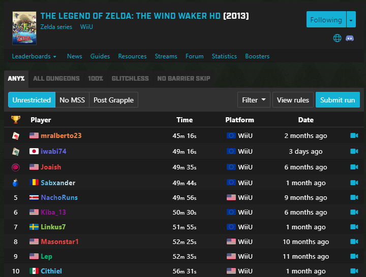
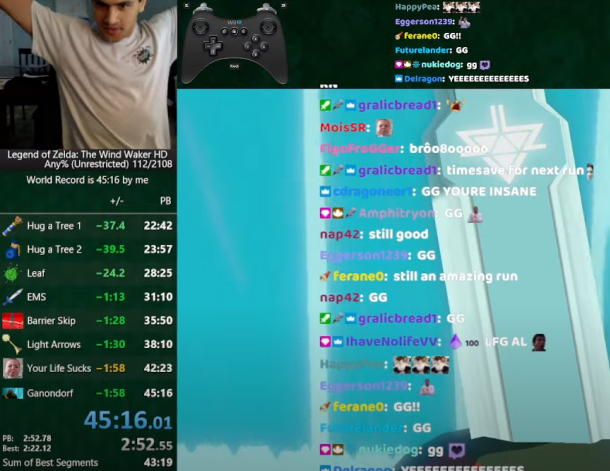

Learning how to speedrun a video game can, and most likely will be challenging. You have to be persistent, consistent, knowledgeable, and even lucky to get good at speedrunning.
But it's very enjoyable.
One of the most crucial tricks in The Legend of Zelda: The Wind Waker HD is an early sequence break (doing the game's story out of order) that requires doing hundreds of precise inputs in a row, down to the 1/30th of a second. If done optimally, the trick saves over 15 minutes as opposed to completing the story as intended. Check out the clip if you're interested in seeing me perform it! (Epilepsy warning: There is a lot of flashing in and out of the pause screen, so viewer discretion is advised).
To a speedrunner running any%, saving even the smallest amount of time is an absolute necessity. Even if a trick is incredibly difficult and intimidating, a speedrunner must be go for the most challenging route if it means saving the most time. There exist many other convoluted tricks that speedrunners use, and one must master all of these techniques to get the best time.
As with other competitive events, speedruns also feature a leaderboard, where top runners submit their time along with a video that demonstrates their performance. This gives the runners the opportunity to demonstrate their hard work while also sharing to the community what works well and what doesn't work well.
Although speedrunning usually is a personal contest (you compete against yourself to get a good time), none of the top speedrunners would be where they are today without the assistance of their respective speedrun community. Speedrunning in nature is a collaborative effort of its runners and glitch hunters (community members who don't run the game, but actively search for glitches that would save time in a run). Speedrunning can be extremely challenging, but there are always community members who are active and willing to help you become the best that you can be.
At the end of the day, speedrunning in its broadest definition is just a competition against yourself to beat the game as fast as possible. One can take speedrunning as serious or as casual as they would like. As long as you are having fun running your desired game, then you are getting the greatest value out of the sport.